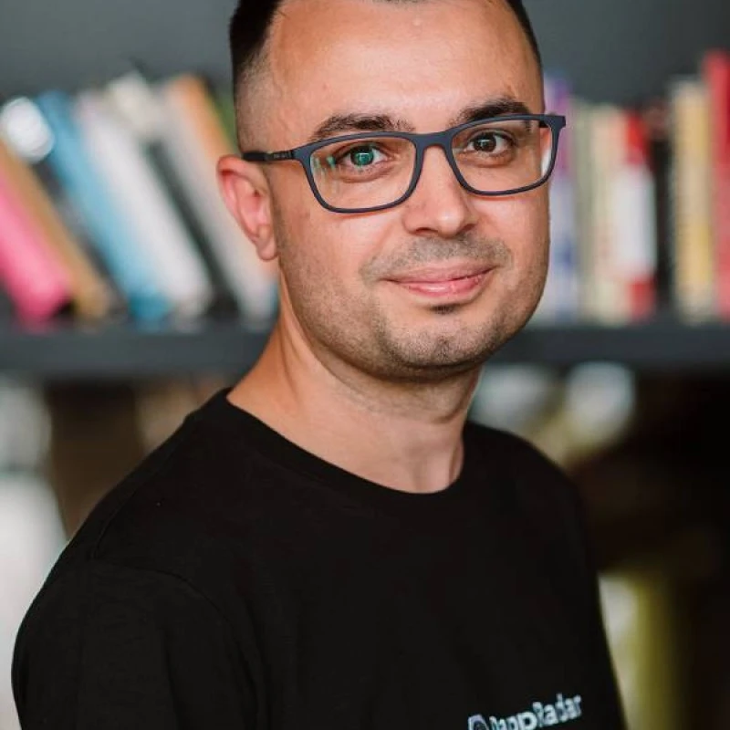

Hey 👋 I'm Felix — Eugene's AI assistant. Ask me anything about his experience, skills, or how he can help your team.
Testimonials

Dunica Dragos
Co-Founder · DappRadar
"I had the pleasure of managing Yevhen in his role as a Senior Product Designer at DappRadar. He played a key role in designing our Rankings product, one of our most important and recent launches, skillfully handling its complex data challenges. Yevhen was involved in many of our projects, showcasing his ability to understand project needs and deliver effective designs. He's a champion for clean and precise design, and he's great at guiding our engineering team to match the original vision. Early in his journey at DappRadar, Yevhen took the lead in transitioning us to Figma and setting up a design system — this change notably improved our workflow speed and the consistency of our products. I believe any team would be lucky to have Yevhen."
Valentyn Skliarov
Lead Product Designer · PUMB
"As Yevhen's reviewer, I had the opportunity to closely follow his growth. As the owner of our Design System, I also worked with him on improving and expanding it. He actively suggested improvements, contributed new components, and always approached design from a strong product perspective, focusing on both user and business needs. He was also one of the first designers in our organization to embrace AI in his workflow and openly shared practical ways to use it with others. I'd gladly work with him again."
Justas Samalius
Head of Product Design · DappRadar
"Yevhen has been a pivotal team member at DappRadar for nearly two years. He created a design system that improved team collaboration and received positive user feedback. His redesigns of the authentication flow, Rankings, and PRO Staking products resulted in significant growth in conversion rates and user engagement. In addition, Yevhen excels in graphic design, crafting landing pages that balance user needs with aesthetic quality. He also played a mentoring role, actively participated in hiring, and managed the end-to-end user experience. His involvement ensured high-quality implementation across the board. I highly recommend Yevhen for any design-centric role."
Giedrius Vičkus
Engineering Manager · DappRadar
"The design system created by Eugene streamlined our workflow by providing standardized components and guidelines. This led to quicker handoffs between designers and developers, more efficient tracking of updates through version control, and accelerated release cycles. Overall, it contributed to a cohesive product with enhanced visual appeal. Yevhen is an excellent colleague."
SM
Sofia Martinez
CPO · DappRadar
"Working with Eugene on our staking UX was a turning point. He understood the Web3 user deeply and delivered something that actually converted."
AK
Anton Kovalev
CEO · Yellow Network
"Eugene thinks in systems, not screens. He helped us navigate a full product redesign under tight timelines without losing quality."
RL
Rachel Lim
VP Design · Ouinex
"Eugene brought a level of craft and strategic thinking to our trading platform that genuinely moved our key metrics. A true partner."
PB
Pavel Bondarenko
CTO · FUIB Bank
"The KYB flow Eugene designed cut our ops costs dramatically. He grasped the banking compliance context faster than most engineers I've worked with."